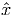
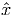

Use the proof of the affine Weyl theorem (so use Fourier-Motzkin elimination explicitly) to construct constraints Ax ≥ b such that
(Note that the y variables correspond to the extreme points and the z variables correspond to the rays.)
 that is satisfied by all x ∈ P and violated
by , or allows us to conclude that no such inequality exists. What is the dual of
your LP? Give an interpretation of the dual LP. (Such an inequality defines a
separating hyperplane that separates
that is satisfied by all x ∈ P and violated
by , or allows us to conclude that no such inequality exists. What is the dual of
your LP? Give an interpretation of the dual LP. (Such an inequality defines a
separating hyperplane that separates  from P. Note that the variables in the LP will
include g.)
from P. Note that the variables in the LP will
include g.)
- If n = m + 1 then P has at most two basic feasible solutions.
- Consider the problem of minimizing max{cT x,dT x} over P, where c,d ∈ IRn. If this problem has an optimal solution, it has an optimal solution that is an extreme point of P.
Along with your solutions to this homework, hand in a brief description of what you would like to do for the project part of this course. Your project can be one of the following:
- a topic arising in your research that fits well with the topics covered in the course. You would work on your own on such a project.
- another project you suggest or I suggest. You can work in groups of up to three people on such a project. All group members should contribute equally to the project. Each individual should turn in a one-page description of their contribution to the project along with the group report.